Lateinamerika · individuell und privat geführt
Lateinamerika ganz individuell - Herzklopfen garantiert
Anden im Morgenlicht, Stimmen auf einem Markt, das Grün des Regenwalds. Wir verbinden Landschaften und Begegnungen zu einer Lateinamerika-Reise, die Ihren Interessen folgt.
Sie möchten geheimnisvolle Hochkulturen kennenlernen, durch saftig-grünen Dschungel wandern oder grenzenlose Freiheit erleben? Und das alles in Ihrem eigenen Tempo und auf luxuriöse Art? Dann kommen Sie mit América Special Tours nach Amerika! Wir wissen, dass Reisen das kostbarste Geschenk sind, das man sich selbst machen kann. Deshalb sind wir von América Special Tours überzeugt, dass Sie eine Reise verdienen, die genau Ihren Wünschen entspricht. Unsere erfahrenen Amerika-Spezialisten erstellen Ihnen Ihre individuelle und auf Ihre Wünsche maßgeschneiderte Reise. Für höchsten Komfort und Sicherheit sorgen ein eigener Chauffeur und Reiseleiter sowie luxuriöse Unterkünfte, in denen Sie sich am Ende des Tages entspannt zurücklehnen können.
Ein früher Blick auf die Anden, das leise Erwachen des Regenwalds oder der Geschmack eines langen Abends: Lateinamerika entfaltet sich am schönsten, wenn Sie Zeit und Raum für eigene Entdeckungen haben.
Ihr Reisemanufaktur-Berater stimmt Route, Reiseleitung, Transfers und Unterkünfte mit Ihnen ab. Dabei zählen nicht nur die einzelnen Orte, sondern auch die Wege dazwischen und die Zeit, die Sie vor Ort verbringen möchten.
Unsere schönsten Reiseziele

Argentinien
Mehr erfahren ↗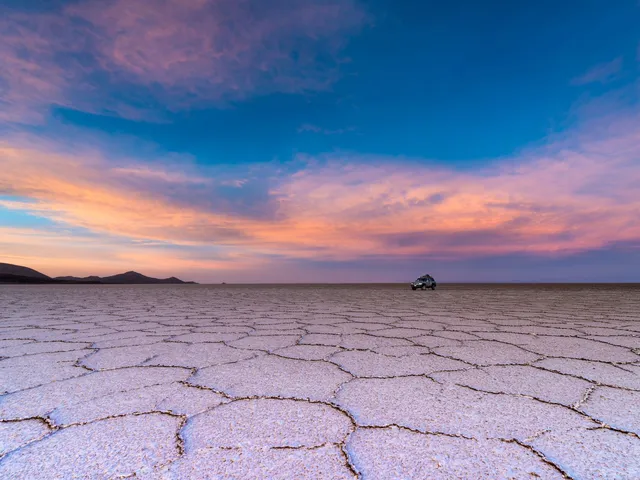
Bolivien
Mehr erfahren ↗
Brasilien
Mehr erfahren ↗
Chile
Mehr erfahren ↗
Costa Rica
Mehr erfahren ↗
Dominikanische Republik
Mehr erfahren ↗
Ecuador
Mehr erfahren ↗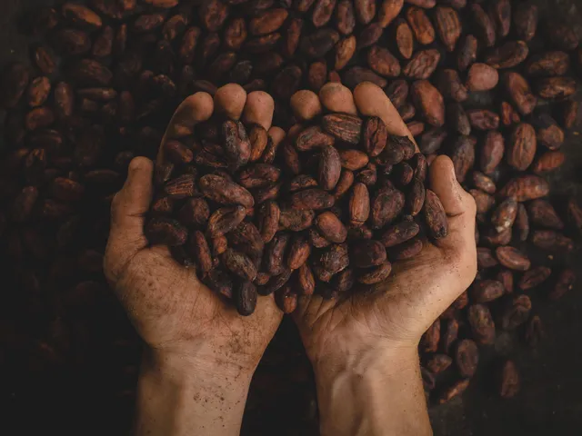
Kolumbien
Mehr erfahren ↗
Mexiko
Mehr erfahren ↗
Nicaragua, Guatemala & Panama
Mehr erfahren ↗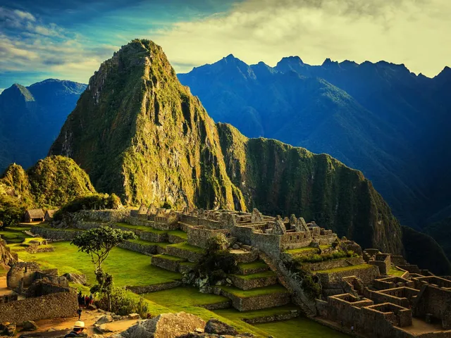
Peru
Mehr erfahren ↗
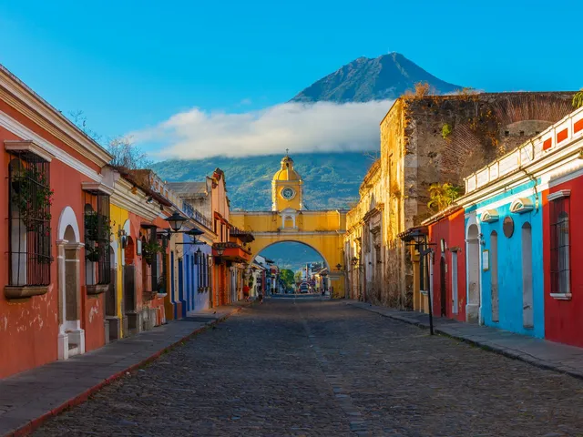
Länderkombinationen
Mehr erfahren ↗Asien
Mehr erfahren ↗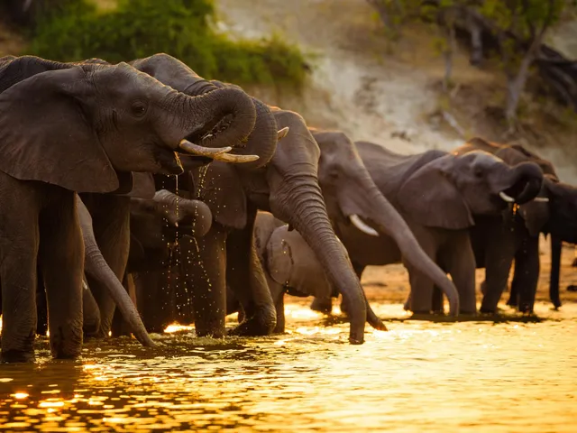
Afrika
Mehr erfahren ↗Reiseideen und persönliche Einblicke
Anregungen für Ihre eigene Route.
Ausgewählte Reiseideen und Reiseberichte unseres Teams geben erste Anregungen. Ihre Route entwickeln wir anschließend gemeinsam nach Ihren Interessen und der verfügbaren Zeit.
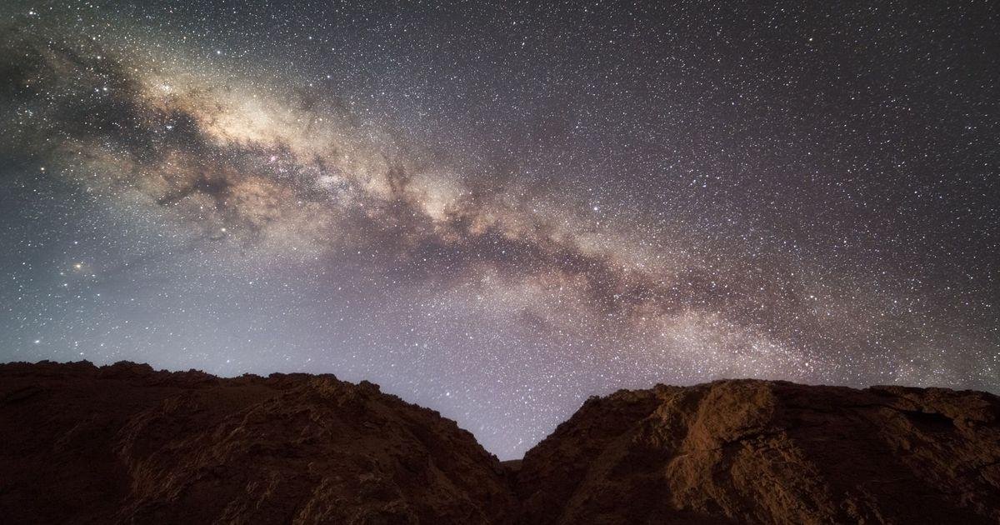
Reiseidee im Fokus
Chile – Der Glanz der Sterne
Eine Reiseinspiration für den klaren Nachthimmel Chiles, die Atacama-Wüste und besondere Beobachtungsorte. Die Route wird individuell abgestimmt.
Chile-Reise ansehen ↗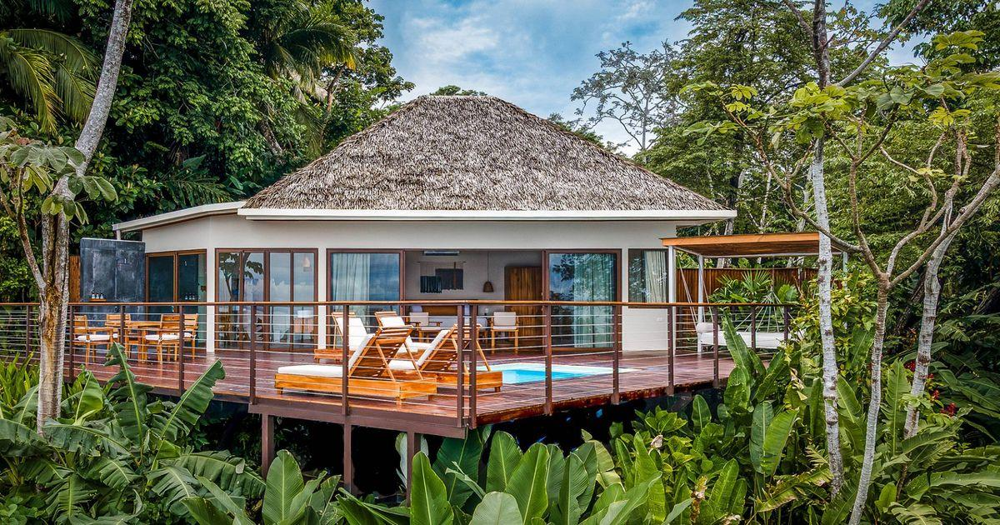
Natur & Komfort
Costa Rica auf besondere Weise
Eine veröffentlichte Reiseidee mit Naturerlebnissen, ausgewählten Eco-Lodges und privaten Charterflügen – vorbehaltlich der Prüfung im individuellen Angebot.
Costa-Rica-Reise ansehen ↗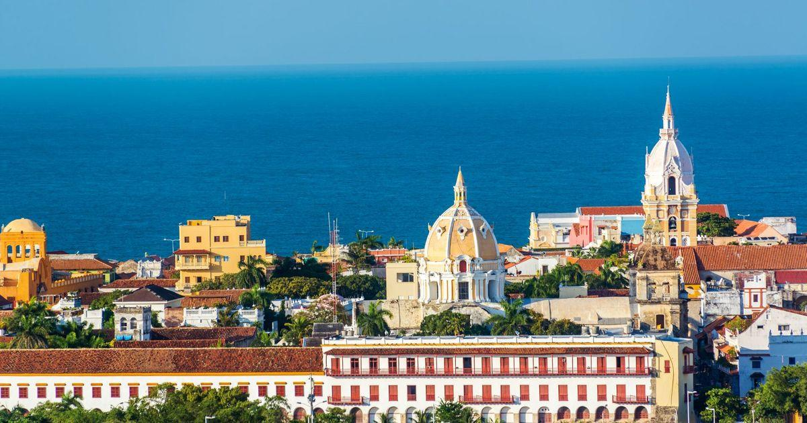
Fantrip · 10.12.2025
Katharina in Kolumbien & am Amazonas
Katharina Reichert berichtet von Bogotá, Medellín, La Macarena, Cartagena und einer Amazonas-Kreuzfahrt in Peru.
Reisebericht lesen ↗Weniger organisieren. Mehr erleben.
Zeit für Landschaften. Raum für Begegnungen.
Mit privater Reiseleitung und einer sorgfältig geplanten Route können Sie sich ganz auf Begegnungen, Natur und besondere Momente konzentrieren. Ihr persönlicher Ansprechpartner bleibt an Ihrer Seite.
Unsere ArbeitsweiseDie América-Reisemanufaktur
Erfahrung, die Ihrer Reise zugutekommt.
Ihre Interessen geben die Richtung vor. Unsere Zielgebietskenntnis verbindet sie zu einer stimmigen Route.
01
Spezialistentum
Spezialistentum bedeutet für uns, dass alle unsere Sales- und Product Manager die Zielgebiete selbst bereist haben. Unsere Empfehlungen beruhen auf eigenen Erfahrungen. Deshalb reisen wir regelmäßig selbst in die Zielgebiete, um uns vor Ort von der Qualität und dem hochklassigen Service unserer Partner zu überzeugen.
02
Persönlicher Service
Ein Ansprechpartner vor, während und nach der Reise. Bei uns bekommen Sie direkt einen persönlichen Betreuer, der Sie von Anfang bis Ende begleitet.
03
Massgeschneiderte Reisen
Gönnen Sie sich das Besondere. Jeder Mensch, jedes Leben ist einzigartig – Warum dann nicht auch Ihre Reise? Eigener Guide? Eigener Chauffeur? Nur Sie und Ihre Liebsten? Warum nicht?
Kundenstimmen
Erinnerungen unserer Gäste.
„Vom ersten Kontakt bis zum Ende der Reise wurden wir optimal von Ihnen betreut.“
Familie B. · Costa-Rica-Reise · 11.02.2026
Kundenstimmen ansehen ↗„Mit vielen neuen Eindrücken und Erfahrungen verabschiedeten wir uns und freuen uns auf weitere Reisen mit dieser fabelhaften Reiseagentur.“
Christine und Jörg · Südamerika-Reise · 10.10.2025
Kundenstimmen ansehen ↗KI-getriebene Reisebegleitung
Persönlich bei AST anfragenAST Connector+: Reiseintelligenz in Ihrer Hand.
KI-Assistenz mit Reisekontext, Flug-Cockpit, AR-Orientierung und Connectivity: Connector+ verbindet digitale Werkzeuge mit persönlicher Betreuung. Die ausführliche Produktseite zeigt Funktionen, Technologie und konkrete Nutzungsszenarien.
ARIA ist als Wissens- und Serviceanbindung vorgesehen. Welche Module und Datenquellen für Ihre Reise verfügbar sind, stimmen wir persönlich mit Ihnen ab.
Die Technik hinter Ihrer Reise ↗- KI: Kontextanalyse, Reisephase und Präferenzen
- Orientierung: AR, GPS und Explorer-Werkzeuge
- Reise-Cockpit: Flug, Hotel, Transfer und Dokumente
- Service: Connectivity, Privé und persönliche Kontakte
Reisemanufaktur-Wissen · Lateinamerika
Große Landschaften brauchen eine kluge Reihenfolge.
Anden, Regenwald, Küsten und Metropolen liegen oft weit auseinander. Eine durchdachte Route verbindet Erlebnisse, ohne jeden Reisetag mit Transfers zu füllen.
01
Höhenlagen einplanen
Bei Reisen in große Höhen sollten Routenfolge und Aufenthaltsdauer bewusst gewählt werden. Individuelle gesundheitliche Fragen gehören in medizinische Beratung.
02
Puffer sind Teil des Komforts
Inlandsflüge, Straßenverbindungen und Grenzformalitäten können Zeit beanspruchen. Zeitreserven helfen, Anschlüsse und Besichtigungen nicht zu eng zu takten.
03
Regionen statt Länder abhaken
Regenwald, Hochland und Küste folgen unterschiedlichen klimatischen Mustern. Die passende Kombination richtet sich nach Reisezeit, Interessen und der Zeit vor Ort.
Demo-Redaktion: Diese Expertise-Beispiele und zusätzlichen FAQ-Antworten sind illustrative Entwürfe. Höhenangaben, saisonale Hinweise, Einreisebestimmungen, Zugänge und betriebliche Aussagen vor Veröffentlichung fachlich prüfen und freigeben.
Gut zu wissen
Ihre Fragen zu Lateinamerika
Was Reisende vor der Planung über Route, Reiseleitung und Budget wissen möchten.
Wie berücksichtige ich Höhenlagen auf einer Andenreise?
Höhenlagen und Aufstiege sollten bei Reihenfolge, Dauer und Aktivitätsniveau berücksichtigt werden. Individuelle gesundheitliche Risiken lassen sich nicht durch eine Reiseplanung beurteilen; hierzu sollte ärztlicher Rat eingeholt werden.
Kann ich mehrere Länder in Lateinamerika kombinieren?
Ja, aber Entfernungen und Verbindungen unterscheiden sich stark. Entscheidend ist, wie viel Zeit Sie tatsächlich vor Ort haben möchten. Eine kleinere Auswahl an Regionen kann Transfers verringern und den Reiseablauf entspannen.
Wie viel Puffer sollte ich zwischen Inlandsflügen einplanen?
Das hängt von Flughäfen, Flugplänen, Gepäck und Anschlussbedingungen ab. Bei getrennten Tickets oder wichtigen Weiterreisen sind großzügige Zeitpuffer sinnvoll; konkrete Verbindungen müssen vor der Buchung geprüft werden.
Wann sollte ich Regenwald und Anden besuchen?
Klima und Niederschlag variieren nach Land, Höhenlage und Region. Eine pauschale Saisonempfehlung für ganz Lateinamerika wäre ungenau. Die gewünschte Route sollte mit aktuellen regionalen Klimainformationen abgeglichen werden.
Sind die Reisen im Katalog fertige Pakete?
Der Katalog übernimmt veröffentlichte Reiseideen und Reiseverläufe als Inspiration. Die Route wird gemeinsam nach Reisedauer, Interessen, Komfortwünschen und Reisezeit angepasst. Leistungen und Vertragspartner werden im konkreten Angebot benannt.
Was unterscheidet die Beratung von allgemeinen Reiseinformationen?
Unsere Reisemanufaktur-Berater kennen ihre Zielgebiete aus eigenen Reisen, Informationsreisen und Weiterbildungen und prüfen Partner vor Ort. Diese Erfahrung hilft, Höhenlagen, Distanzen und passende Kombinationen im persönlichen Gespräch einzuordnen.
Welches Gesamtbudget sollte ich einplanen?
Für die individuelle Fernreiseplanung beginnen Anfragen in der Regel bei 5.000 € pro Person einschließlich internationaler Flüge. Route, Reisezeit, Aufenthaltsdauer, Unterkünfte und lokale Leistungen beeinflussen den konkreten Preis. Liegt Ihr Budget darunter, können Sie Ihre Anfrage dennoch stellen; wir besprechen gemeinsam, was möglich ist.
Kann ich mehrere Länder oder unterschiedliche Landschaften verbinden?
Viele Reiseideen im Katalog verbinden Regionen oder Reisearten. Ob eine Kombination von Anden, Regenwald, Städten oder Küsten im verfügbaren Zeitraum sinnvoll ist, prüfen wir gemeinsam anhand der tatsächlichen Distanzen und des gewünschten Reisetempos.
Wie aussagekräftig sind die Kundenstimmen?
Die hier gezeigten Zitate stammen aus veröffentlichten Rückmeldungen zu Costa-Rica- und Südamerika-Reisen. Sie berichten von persönlichen Erfahrungen einzelner Gäste und versprechen nicht automatisch dieselben Abläufe oder Leistungen für andere Reisen.
Der erste Schritt
Erzählen Sie uns von Ihrer Lateinamerika-Reise.
Ihre Interessen, Reisezeit und Ihr Budgetrahmen helfen uns, das Gespräch gezielt vorzubereiten.
Entscheidungshilfen
Reiseplanung, nachvollziehbar erklärt.
Beliebte Lateinamerika Luxusreisen
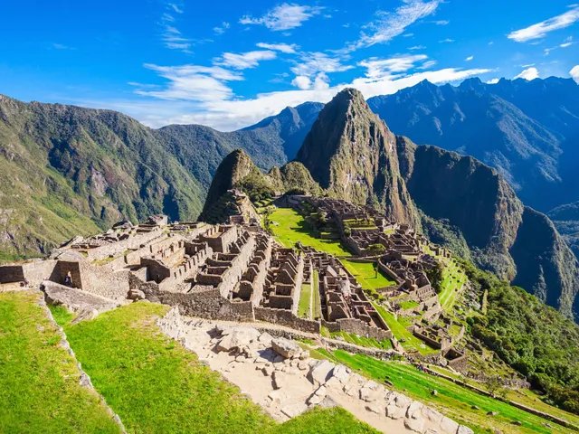
Peru Individualreise - Perus Höhepunkte
Mehr erfahren ↗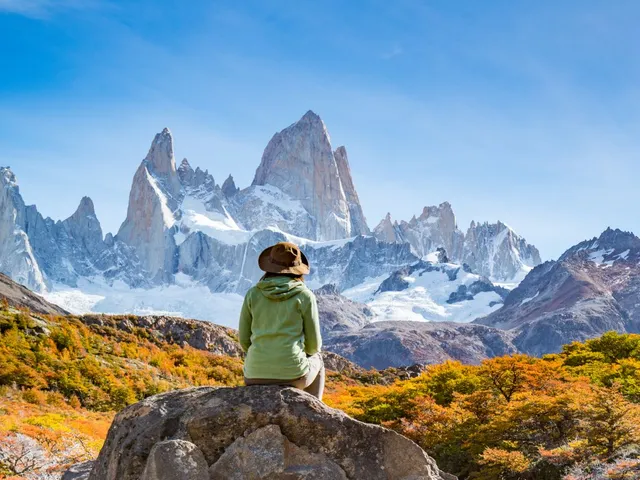
Luxusreise nach Patagonien
Mehr erfahren ↗Argentinien Rundreise - Tango, Wein und Wellness
Mehr erfahren ↗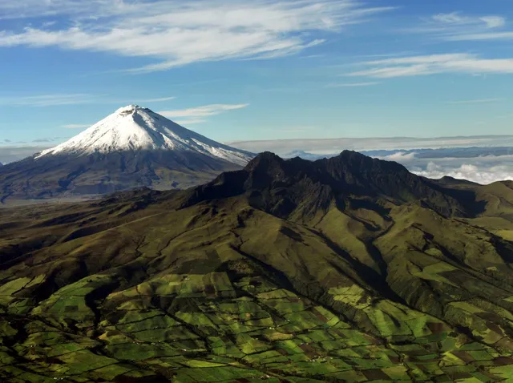
Ecuador Reise - Schokolade und Vulkane
Mehr erfahren ↗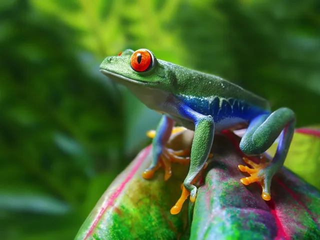
Costa Rica Naturreise - Das Dschungel Abenteuer
Mehr erfahren ↗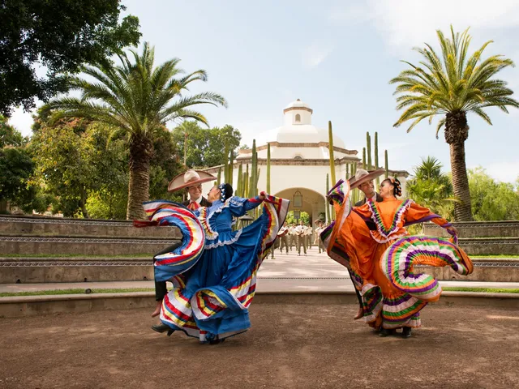
Mexiko Rundreise - Pueblos Mágicos
Mehr erfahren ↗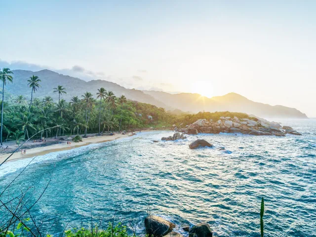
Kolumbien Reise - Von den Anden in die Karibik
Mehr erfahren ↗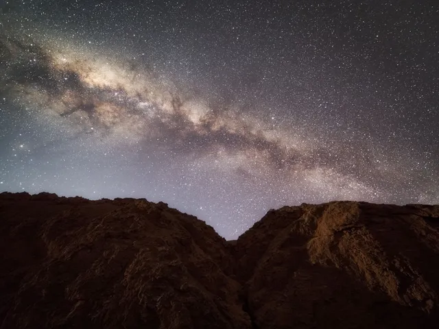
Chile Reise - Der Glanz der Sterne
Mehr erfahren ↗Unsere Blogbeiträge
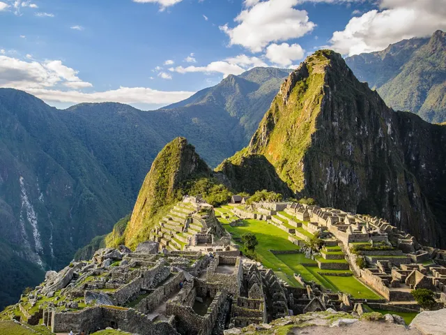
Südamerika - der Kontinent der Kontraste und Gegensätze
Mehr erfahren ↗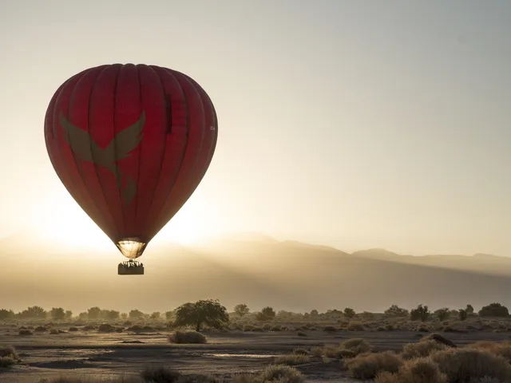
Die Atacama Wüste aus der Vogelperspektive
Mehr erfahren ↗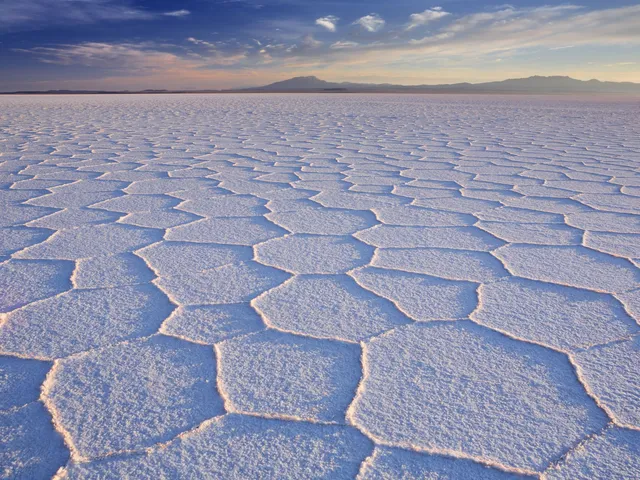
Salar de Uyuni: Größte Salzwüste der Welt
Mehr erfahren ↗Alle Reiseideen
Alle verfügbaren Reiseideen mit ausführlichen Verläufen in dieser Demo – ohne Wechsel auf die bisherigen Länder-Websites.